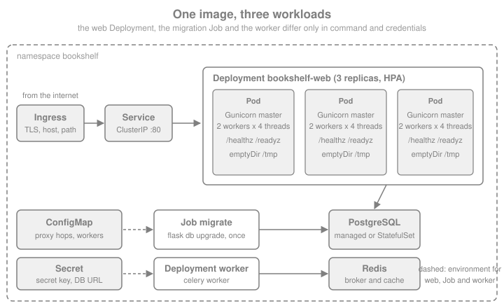

Docker & Kubernetes
|
This content was generated with the assistance of AI and should be verified against the official documentation before being relied on in production. |
This page is written against Flask 3.1.3 (released 2026-02-18), Werkzeug 3.1.9, Gunicorn 26.2.0 and Celery 5.6.3, with the
python:3.14-slim, postgres:18 and redis:8 images, checked on 2026-10-07. Flask 3.2 is not released yet; nothing on
this page depends on it. The Python snippets were executed on Python 3.13 with Flask’s test client and a real Werkzeug
server on a loopback port. The container steps were run too, on Docker 29.8.2: both Dockerfiles were built, the images
were started and stopped with docker stop, and the Compose file was brought up with PostgreSQL, Redis, the web service and
a Celery worker (the outputs shown come from those runs). The Kubernetes manifests were validated against the 1.34 schemas
with kubeconform but not applied to a cluster, and the GitHub Actions workflows were checked with actionlint but not run on
GitHub, so treat those two as reviewed templates. The page covers what is specific to Flask: what to put in the image, how
to start the process, how many processes to run, how the proxy in front is trusted, and what a platform expects from the
application (health endpoints, signals, configuration). Generic Docker and Kubernetes knowledge lives on the
Docker and Kubernetes pages of this site, linked where
each topic comes up. The running scenario is the Bookshelf application of this section.
In a Hurry: The Short Version
| Decision | Recommendation |
|---|---|
Server |
Gunicorn (or another production WSGI server), never |
Base image |
The official |
Build |
Multi-stage: install locked dependencies into a virtual environment in a builder stage, copy only that environment into the runtime stage. |
User |
A non-root user with a numeric UID in the image ( |
Start command |
Exec form, |
Processes |
A few Gunicorn workers per container (2 to 4), and scale with replicas. Do not derive the worker count from the machine’s CPU count inside a container. |
Configuration |
Environment variables read with |
Platform contract |
|
The Project Inside the Container
The Bookshelf project is the installable package described in
Application Factory & Project Layout: a pyproject.toml,
a src/bookshelf package whose create_app() builds the application, and a lock file. The container needs three things
from the application that a laptop run does not: configuration that arrives through environment variables, endpoints the
platform can probe, and a trusted-proxy setting that matches the load balancer in front. The factory below has all three.
It reads every BOOKSHELF_* variable with Config.from_prefixed_env() (the mechanism of
Configuration), refuses to start without a SECRET_KEY, wraps the WSGI application in
ProxyFix only when told how many proxies exist, and exposes the two probe endpoints.
from flask import Flask, jsonify
from werkzeug.middleware.proxy_fix import ProxyFix
def create_app(test_config=None, readiness_checks=()):
app = Flask(__name__)
app.config.from_prefixed_env("BOOKSHELF") # BOOKSHELF_SECRET_KEY -> SECRET_KEY, and so on
if test_config:
app.config.from_mapping(test_config)
if not app.config.get("SECRET_KEY"):
raise RuntimeError("set BOOKSHELF_SECRET_KEY") # fail at start-up, not at the first login
hops = app.config.get("PROXY_HOPS", 0) # BOOKSHELF_PROXY_HOPS=1 behind one ingress
if hops:
app.wsgi_app = ProxyFix(app.wsgi_app, x_for=hops, x_proto=hops, x_host=hops)
@app.get("/healthz")
def healthz():
"""Liveness: the process answers. Never touch the database here."""
return jsonify(status="ok"), 200, {"Cache-Control": "no-store"}
@app.get("/readyz")
def readyz():
"""Readiness: every dependency the application needs to serve is reachable."""
failed = []
for check in readiness_checks:
try:
check()
except Exception as exc:
failed.append(f"{check.__name__}: {type(exc).__name__}")
if failed:
return jsonify(status="unavailable", failed=failed), 503, {"Cache-Control": "no-store"}
return jsonify(status="ready"), 200, {"Cache-Control": "no-store"}
return appThe probe endpoints return the names of the failed checks, not their messages, so a probe cannot be used to read a
connection string out of an exception. Cache-Control: no-store stops a proxy from caching a readiness answer. The
readiness view runs inside a request, and therefore inside an application context, so a check can use
db.session directly, as shown next. Everything is exercised with the test client, with the environment patched the way a
container’s environment would be:
import os
import secrets
from unittest import mock
from flask import request
from flask_sqlalchemy import SQLAlchemy
from sqlalchemy import text
db = SQLAlchemy()
def database():
db.session.execute(text("SELECT 1")) # a real check: one round trip to the database
# 1. Configuration arrives as environment variables, exactly as in a container
env = {"BOOKSHELF_SECRET_KEY": secrets.token_hex(32), "BOOKSHELF_PROXY_HOPS": "1"}
with mock.patch.dict(os.environ, env):
app = create_app({"SQLALCHEMY_DATABASE_URI": "sqlite://"}, readiness_checks=[database])
db.init_app(app)
app.add_url_rule("/scheme", "scheme", lambda: request.scheme)
client = app.test_client()
assert app.config["PROXY_HOPS"] == 1 # "1" was parsed as JSON, so it is an int
assert client.get("/healthz").get_json() == {"status": "ok"}
assert client.get("/readyz").get_json() == {"status": "ready"}
# 2. One trusted proxy: X-Forwarded-Proto is honoured, so Flask knows the client used HTTPS
assert client.get("/scheme", headers={"X-Forwarded-Proto": "https"}).text == "https"
# 3. A failing dependency turns readiness into 503 while liveness stays 200
broken = create_app(
{"SECRET_KEY": "x", "SQLALCHEMY_DATABASE_URI": "sqlite:////nonexistent-dir/bookshelf.db"},
readiness_checks=[database],
)
db.init_app(broken)
response = broken.test_client().get("/readyz")
assert response.status_code == 503 and response.get_json()["failed"] == ["database: OperationalError"]
assert broken.test_client().get("/healthz").status_code == 200
# 4. No secret key, no application
try:
create_app()
except RuntimeError as exc:
print("refused to start:", exc)The second assertion is the reason ProxyFix appears in the factory: behind a TLS-terminating ingress the application
itself sees plain HTTP, and without the forwarded headers request.scheme, url_for(..., _external=True) and secure cookie
decisions are wrong. Behind an Ingress: Trusting the Proxy explains how many hops to trust.
Why Not flask run in a Container
The flask run command and app.run() start the Werkzeug development server. The Flask documentation says plainly not to
use it in production: it is single-purpose, not hardened, and not tested for load. Starting the debugger there, which the
older books do with app.run(debug=True) or FLASK_ENV=development in a Dockerfile, is worse: the interactive debugger
allows arbitrary code execution to anyone who can reach the port and guess or learn its PIN. FLASK_ENV, ENV and
app.env were removed in Flask 2.3 and do nothing in 3.x, so a Dockerfile that still sets them gives no development
behaviour and a false sense of configuration. In a container the production server is the process you run, and the debugger
has no place in the image or in the Compose file that runs it. For local debugging, run the application on the host, outside
the container, as in Debugging, Logging & Profiling, pointing at the
Compose-managed database and Redis.
Gunicorn as the Container’s Process
Gunicorn is a pre-fork WSGI server: a master process starts worker processes and replaces them when they die or stall. The Flask documentation’s Gunicorn page shows the minimal form, and the factory is named in quotes with parentheses so that Gunicorn calls it:
gunicorn "bookshelf:create_app()"Source: Flask: Deploying with Gunicorn
Everything else goes into gunicorn.conf.py, which Gunicorn loads from the working directory by default
(the --config setting defaults to ./gunicorn.conf.py). A file keeps the command line stable and lets values come from
environment variables with sensible defaults:
import os
# Gunicorn reads ./gunicorn.conf.py on its own; every name below is a setting
bind = f"0.0.0.0:{os.environ.get('PORT', '8000')}"
workers = int(os.environ.get("WEB_CONCURRENCY", "2"))
threads = int(os.environ.get("GUNICORN_THREADS", "4")) # threads > 1 selects the gthread worker
worker_tmp_dir = "/dev/shm" # heartbeat files in memory, not on the container's disk
timeout = 30 # a silent worker is killed and replaced after this many seconds
graceful_timeout = 25 # time to finish requests after SIGTERM, below the Pod's grace period
keepalive = 5
max_requests = 1000 # recycle workers to bound memory growth ...
max_requests_jitter = 100 # ... without restarting them all at once
accesslog = "-" # stdout
errorlog = "-" # stderr
loglevel = os.environ.get("GUNICORN_LOG_LEVEL", "info")Source: Gunicorn: Settings
A typo in a setting name is silently a plain variable in a Python file, so it is worth checking once that every name is
a real setting. Gunicorn’s own Config object rejects unknown ones:
from gunicorn.config import Config
cfg = Config()
names = ["bind", "workers", "threads", "worker_tmp_dir", "timeout", "graceful_timeout", "keepalive",
"max_requests", "max_requests_jitter", "accesslog", "errorlog", "loglevel"]
for name in names:
cfg.set(name, globals()[name])
assert cfg.bind == ["0.0.0.0:8000"] and cfg.workers == 2 and cfg.threads == 4
assert cfg.worker_class_str == "gthread" # threads > 1 switched the worker type
try:
cfg.set("gracefull_timeout", 25) # the typo is rejected
except AttributeError as exc:
print("rejected:", exc)Source: Gunicorn: Settings, threads
| Setting | Value used | Why |
|---|---|---|
|
|
Inside a container the server must listen on all interfaces, or the published port reaches nothing. Platforms such as Cloud Run
tell the container which port to use through |
|
|
Gunicorn already defaults to that variable (or 1). Set it explicitly per environment. |
|
4 |
More than one thread per worker switches to the |
|
|
Workers write heartbeat files so the master can see they are alive. Gunicorn’s documentation warns that disk-backed filesystems can make that write block; a memory-backed directory avoids it. It also works with a read-only root filesystem. |
|
30 |
A worker that does not report for this long is killed and replaced. It is not a request timeout for |
|
25 |
Time workers get to finish requests after a stop or restart signal. Keep it below the platform’s grace period, see Health Endpoints and Graceful Shutdown. |
|
1000, 100 |
Recycle workers to contain slow memory leaks in application or extension code; the jitter staggers the restarts. |
|
|
Standard output and standard error, where the container runtime collects logs. No log files inside the image. |
|
default ( |
Which proxies Gunicorn trusts for scheme headers. See Behind an Ingress: Trusting the Proxy. |
|
off |
Loads the application in the master before forking, which saves memory through copy-on-write but shares anything created at import time, such as open database connections, across workers. Leave it off unless startup memory is a measured problem. |
How many workers. The tempting formula of two times the CPU count plus one assumes the process sees the machine it runs on.
Inside a container, multiprocessing.cpu_count() reports the host’s CPUs, not the Kubernetes CPU limit or a cgroup quota, so
a pod limited to one CPU on a 64-core node would start 129 workers and be throttled to a crawl. Choose a small, explicit number
(2 to 4), give the container a matching CPU request, and scale out with replicas, which the orchestrator can schedule,
restart and balance. Compare the one-process-per-container reasoning on
FastAPI’s Docker & Kubernetes page; Flask differs only in that a
synchronous WSGI process serves one request at a time, so threads (or gevent workers, see
Async, gevent & Quart) are how a worker serves more than one.
Behind an Ingress: Trusting the Proxy
An ingress controller or load balancer terminates TLS and adds X-Forwarded-For, X-Forwarded-Proto and
X-Forwarded-Host. Two layers can interpret them, and they should not fight. Werkzeug’s ProxyFix rewrites the WSGI
environment for Flask, and Flask’s documentation says to give it exactly the number of proxies you have, because every
x_* value trusts that many entries from the right of the header, and a client can prepend its own. Gunicorn itself decides the
request scheme from secure_scheme_headers for connections from addresses in forwarded_allow_ips, which defaults to the
FORWARDED_ALLOW_IPS environment variable and, when unset, to loopback only. The usual arrangement in Kubernetes is
ProxyFix with the real hop count (one for a single ingress, two with a CDN in front) and no widening of
forwarded_allow_ips to *. Setting TRUSTED_HOSTS (Flask 3.1) to the public host names makes Flask reject requests with
another Host header, a cheap defence against host-header poisoning that matters once the application builds absolute URLs;
the details are in Security Considerations. The nginx and Apache
configurations in front of Gunicorn are covered by the deployment page of this section.
If a Flask application is mounted inside a FastAPI application with WSGIMiddleware, the container runs the ASGI server and
the Flask code shares its process; that arrangement and its limits are in
FastAPI: Sub-applications, WSGI & GraphQL. Everything on this
page then applies to the ASGI server’s command instead of Gunicorn’s.
A Production Dockerfile
The Dockerfile below is a two-stage build. The builder stage creates a virtual environment in /opt/venv and installs the
locked, hash-checked dependencies, then the project itself without dependencies. The runtime stage starts again from the same
slim image, adds a non-root user, copies the finished environment, and starts Gunicorn. Compilers, pip caches and the source
tree stay in the builder.
# syntax=docker/dockerfile:1
FROM python:3.14-slim AS builder
ENV PIP_NO_CACHE_DIR=1 PIP_DISABLE_PIP_VERSION_CHECK=1
RUN python -m venv /opt/venv
ENV PATH="/opt/venv/bin:$PATH"
WORKDIR /build
# Dependencies first: this layer is rebuilt only when the lock file changes
COPY requirements.lock ./
RUN pip install --require-hashes -r requirements.lock
COPY pyproject.toml ./
COPY src ./src
RUN pip install --no-deps .
FROM python:3.14-slim AS runtime
ENV PYTHONUNBUFFERED=1 \
PYTHONDONTWRITEBYTECODE=1 \
PATH="/opt/venv/bin:$PATH"
RUN groupadd --system --gid 10001 app \
&& useradd --system --uid 10001 --gid app --no-create-home --shell /usr/sbin/nologin app
COPY --from=builder /opt/venv /opt/venv
WORKDIR /app
COPY gunicorn.conf.py healthcheck.py ./
USER 10001:10001
EXPOSE 8000
HEALTHCHECK --interval=30s --timeout=3s --start-period=10s --retries=3 \
CMD ["python", "-c", "import sys, healthcheck; sys.exit(healthcheck.main())"]
CMD ["gunicorn", "bookshelf:create_app()"]Source: Docker: Dockerfile reference
The lock file comes from the project’s own tooling. With uv, uv pip compile pyproject.toml --universal --generate-hashes
-o requirements.lock writes pinned versions with hashes for every platform, and --require-hashes makes pip refuse
anything that does not match, which is the reproducibility and supply-chain property that a bare
pip install flask in a Dockerfile lacks. The built image was 245 MB in the run behind this page.
| Line | What it does and why |
|---|---|
|
The official image on Debian slim: small, with the usual |
|
An environment outside the source directory that can be copied whole between stages. Putting it first on |
|
Layer caching: the install layer is rebuilt only when dependencies change, not on every edit of a view. See Build Cache & Multi-stage Builds. |
|
Log lines reach the container runtime immediately instead of waiting in a buffer. |
|
The environment was byte-compiled at install time, and a read-only filesystem could not take new files anyway. |
|
The process runs without root. A numeric |
|
Only the two small files that sit beside the package; the application code is in the installed environment, not in
|
|
Docker and Compose use it; Kubernetes ignores it and uses its own probes (Kubernetes). The slim image has no |
Exec-form |
Gunicorn is PID 1 and receives |
A .dockerignore keeps the build context small and, more important, keeps secrets and local state out of the image, because
COPY and COPY . . take everything that is not excluded:
.git
.venv
__pycache__
*.pyc
.pytest_cache
.env
.env.*
instance/
tests/
docs/
compose*.yaml
Dockerfile*The instance/ folder holds the instance configuration of
Application Factory & Project Layout, often a local SQLite file
and a config.py with secrets, and must never be baked into an image. Build and run it, passing the secret at run time:
docker build -t bookshelf:1.0.0 .
docker run --rm -p 127.0.0.1:8000:8000 \
-e BOOKSHELF_SECRET_KEY="$(python -c 'import secrets; print(secrets.token_hex(32))')" \
bookshelf:1.0.0Source: Docker: docker container run
$ curl -s localhost:8000/healthz
{"status":"ok"}
$ docker exec <container> id
uid=10001(app) gid=10001(app) groups=10001(app)Source: Docker: docker container exec
More on layers, tags and hardening is in Dockerfile Fundamentals and Image Best Practices & Security.
A uv-Based Image
If the project is managed with uv, the lock file is uv.lock and the builder stage uses uv sync. The shape follows uv’s own
Docker guide: copy the uv binary from its official image at a pinned version, compile bytecode, use copy link mode because the
cache and the target are different filesystems, install dependencies in their own layer, then the project, and copy only
.venv into the final stage:
# syntax=docker/dockerfile:1
FROM python:3.14-slim AS builder
COPY --from=ghcr.io/astral-sh/uv:0.12.23 /uv /uvx /bin/
ENV UV_COMPILE_BYTECODE=1 \
UV_LINK_MODE=copy \
UV_PYTHON_DOWNLOADS=never
WORKDIR /app
RUN --mount=type=cache,target=/root/.cache/uv \
--mount=type=bind,source=uv.lock,target=uv.lock \
--mount=type=bind,source=pyproject.toml,target=pyproject.toml \
uv sync --locked --no-install-project --no-dev
COPY pyproject.toml uv.lock ./
COPY src ./src
RUN --mount=type=cache,target=/root/.cache/uv \
uv sync --locked --no-dev --no-editable
FROM python:3.14-slim AS runtime
ENV PYTHONUNBUFFERED=1 \
PYTHONDONTWRITEBYTECODE=1 \
PATH="/app/.venv/bin:$PATH"
RUN groupadd --system --gid 10001 app \
&& useradd --system --uid 10001 --gid app --no-create-home --shell /usr/sbin/nologin app
COPY --from=builder /app/.venv /app/.venv
WORKDIR /app
COPY gunicorn.conf.py healthcheck.py ./
USER 10001:10001
EXPOSE 8000
CMD ["gunicorn", "bookshelf:create_app()"]Source: uv: Using uv in Docker
--locked fails the build when uv.lock is out of date with pyproject.toml, --no-dev leaves test tools out of the image,
and --no-editable installs the package into the environment instead of linking to the source tree, so the runtime stage
needs only .venv. UV_PYTHON_DOWNLOADS=never makes uv use the image’s interpreter, and the virtual environment must keep the
same absolute path (/app/.venv) in both stages because environments are not relocatable. This image was 234 MB and ran
identically to the pip one. It omits the HEALTHCHECK for brevity; add the same lines as above.
A Health Check Without curl
The HEALTHCHECK command runs inside the container, and the slim image does not ship curl or wget. A short script from
the standard library does the job and returns the exit code Docker expects (0 healthy, 1 unhealthy):
import sys
import urllib.error
import urllib.request
def main(url="http://127.0.0.1:8000/healthz", timeout=2.0):
try:
with urllib.request.urlopen(url, timeout=timeout) as response:
return 0 if response.status == 200 else 1
except (urllib.error.URLError, OSError):
return 1The function is tested against a real server on an ephemeral port, started with Werkzeug, using both probe endpoints of the factory:
import threading
from werkzeug.serving import make_server
server = make_server("127.0.0.1", 0, app) # port 0: the OS picks a free port
thread = threading.Thread(target=server.serve_forever, daemon=True)
thread.start()
base = f"http://127.0.0.1:{server.server_port}"
try:
assert main(base + "/healthz") == 0 # healthy
assert main(base + "/readyz") == 0 # the SQLite check passes
assert main(base + "/missing") == 1 # 404 becomes unhealthy
finally:
server.shutdown()
assert main(base + "/healthz", timeout=0.5) == 1 # nothing is listening any moreConfiguration and Secrets in a Container
A container image must be the same in every environment, so everything that differs travels in the environment. With
from_prefixed_env("BOOKSHELF") every BOOKSHELF_* variable becomes a config key; values are parsed as JSON where they can
be (so "1" is an integer and "false" a boolean) and stay strings otherwise, and BOOKSHELF_CELERY__broker_url sets
the nested key broker_url of the CELERY dictionary, which is what the Celery pattern of
Background Jobs, Celery & E-mail reads. Flask itself supports the
FLASK_ prefix by default.
-
Secrets stay out of the image. No
ENV BOOKSHELF_SECRET_KEY=...and noARGcarrying a password: both are recorded in the image’s metadata and layers, and anyone who can pull the image can read them. Pass them at run time, from a Kubernetes Secret, a Compose.envfile that is git-ignored, or a secret manager. This is also why.envis in.dockerignore. -
One key for every replica. Flask signs the session cookie, CSRF tokens and
itsdangeroustokens withSECRET_KEY. If each replica generates its own at start-up, a user’s session fails whenever the load balancer picks another Pod. Generate the key once (secrets.token_hex(32)), store it in the Secret, and rotate withSECRET_KEY_FALLBACKS(Flask 3.1), the list of old keys still accepted for verification, as described in Security Considerations. -
Database URLs with special characters. A password containing
@,/or:breaks a URL built by string formatting. Use a password that is URL-safe (hexadecimal output ofsecrets.token_hexis) or build the URL with SQLAlchemy’sURL.create(). -
Read-only root filesystem. Run the container with
read_only: true(Compose) orreadOnlyRootFilesystem: true(Kubernetes) and give it a writable/tmp. Python’stempfileneeds one: Werkzeug spools large uploads there (see File Uploads) and Celery’s worker, as a test for this page showed, fails with "No usable temporary directory" without it.
A Kubernetes Secret can be created without writing a key into any file, using a command that generates it on the spot:
kubectl create namespace bookshelf
kubectl --namespace bookshelf create secret generic bookshelf-secrets \
--from-literal=BOOKSHELF_SECRET_KEY="$(python -c 'import secrets; print(secrets.token_hex(32))')" \
--from-literal=BOOKSHELF_SQLALCHEMY_DATABASE_URI="$DATABASE_URL"Run it once: executing it again would generate a different key and invalidate every session. In a real cluster the Secret is usually produced from a secret manager by an operator or by sealed or encrypted manifests; see Kubernetes Secrets for the options and for the fact that a Secret is only base64, not encryption, unless encryption at rest is configured.
Docker Compose: Web, PostgreSQL, Redis and a Worker
Compose describes the whole stack for a single host, which is the right tool for local development and small deployments.
This file runs the web application, a one-shot migration service, PostgreSQL 18, Redis 8 and a Celery worker built from the same
image. It has no version: key (the Compose Specification ignores it) and is run with docker compose, the plugin that
replaced the old docker-compose v1 binary, which is end of life.
name: bookshelf
x-app-env: &app-env
BOOKSHELF_SECRET_KEY: ${BOOKSHELF_SECRET_KEY:?set it in the .env file}
BOOKSHELF_SQLALCHEMY_DATABASE_URI: postgresql+psycopg://bookshelf:${POSTGRES_PASSWORD:?set it in the .env file}@db:5432/bookshelf
BOOKSHELF_CELERY__broker_url: redis://redis:6379/0
services:
db:
image: postgres:18
environment:
POSTGRES_USER: bookshelf
POSTGRES_PASSWORD: ${POSTGRES_PASSWORD:?set it in the .env file}
POSTGRES_DB: bookshelf
volumes:
- pgdata:/var/lib/postgresql
healthcheck:
test: ["CMD-SHELL", "pg_isready -U bookshelf -d bookshelf"]
interval: 5s
timeout: 3s
retries: 10
redis:
image: redis:8
healthcheck:
test: ["CMD", "redis-cli", "ping"]
interval: 5s
timeout: 3s
retries: 10
migrate:
build: .
command: ["flask", "--app", "bookshelf:create_app", "db", "upgrade"]
environment: *app-env
depends_on:
db:
condition: service_healthy
restart: "no"
web:
build: .
ports:
- "127.0.0.1:8000:8000"
environment:
<<: *app-env
WEB_CONCURRENCY: "2"
depends_on:
migrate:
condition: service_completed_successfully
redis:
condition: service_healthy
stop_grace_period: 30s
read_only: true
tmpfs:
- /tmp
cap_drop: [ALL]
security_opt: ["no-new-privileges:true"]
restart: unless-stopped
worker:
build: .
command: ["celery", "--app", "bookshelf.tasks:celery_app", "worker", "--loglevel", "INFO", "--concurrency", "2"]
environment: *app-env
depends_on:
migrate:
condition: service_completed_successfully
redis:
condition: service_healthy
healthcheck:
test: ["CMD-SHELL", "celery --app bookshelf.tasks:celery_app inspect ping -d celery@$$HOSTNAME"]
interval: 30s
timeout: 10s
retries: 3
read_only: true
tmpfs:
- /tmp
cap_drop: [ALL]
security_opt: ["no-new-privileges:true"]
restart: unless-stopped
volumes:
pgdata:The secrets live in a git-ignored .env file that Compose reads automatically, created once with generated values (and the
:? forms make Compose stop with a message if either is missing):
printf 'BOOKSHELF_SECRET_KEY=%s\nPOSTGRES_PASSWORD=%s\n' \
"$(python -c 'import secrets; print(secrets.token_hex(32))')" \
"$(python -c 'import secrets; print(secrets.token_hex(16))')" > .env
docker compose config --quiet && docker compose up --buildIn the run behind this page (with the migration command replaced by a no-op, because the sample project has no migration
folder), docker compose ps showed db and redis healthy, web healthy through the image’s HEALTHCHECK, and the worker
healthy through celery inspect ping, and curl localhost:8000/readyz answered {"status":"ready"}.
What the file shows, point by point:
-
Order comes from health, not from the order of lines.
depends_onwithcondition: service_healthywaits for the database to accept connections, andservice_completed_successfullymakeswebandworkerwait for themigrateservice to exit with status 0. A plaindepends_ononly waits for the container to start, which is the mistake behind the "connection refused" errors of older tutorials. -
Migrations are a service, not part of the web command. With two web replicas a start-up migration races itself; the dedicated service runs once. The same idea in Kubernetes is a Job, Running Migrations.
-
The hardening options work for Flask.
read_onlywith atmpfsfor/tmp,cap_drop: [ALL]andno-new-privilegesran the application and the worker without trouble. Gunicorn’s heartbeat directory is/dev/shm, which Docker mounts as a memory filesystem. -
stop_grace_period: 30sgives Gunicorn’s 25-secondgraceful_timeoutroom, because Compose’s default is ten seconds (Health Endpoints and Graceful Shutdown). -
The port is published on
127.0.0.1."8000:8000"would expose the service on every interface of the host. -
$$HOSTNAMEescapes the dollar sign so that Compose passes it to the container’s shell, which expands it to the worker’s name forinspect ping. -
The worker reuses the image. It differs only by
command. Its Celery application lives in a module of the package (bookshelf.tasks), built as described in Background Jobs, Celery & E-mail. Running it as a separate service lets you scale it independently withdocker compose up --scale worker=3.
For development on the host, docker compose up db redis starts only the dependencies, and flask --app bookshelf run
--debug on the host connects to them; that keeps the debugger out of every container. See
Compose in Practice for profiles, overrides and watch mode.
Health Endpoints and Graceful Shutdown
Two probes, two questions. Liveness asks "should this process be restarted?", readiness asks "should it receive traffic?".
/healthz therefore does nothing but answer, and /readyz checks what a request needs. The mistake to avoid is a
liveness probe that calls the database: when the database is down every Pod then fails liveness, Kubernetes restarts all of
them, and a recoverable outage becomes a restart storm. A readiness failure only removes the Pod from the Service, which is
the right reaction. Keep readiness checks cheap and bounded by timeouts (for PostgreSQL put connect_timeout in the connect_args of
SQLALCHEMY_ENGINE_OPTIONS so a hung database cannot hold a probe for minutes), and do not check optional dependencies that the
application can live without. The generic probe mechanics are in
Health Probes & Lifecycle.
What happens at shutdown. When a container is stopped, the runtime sends SIGTERM to PID 1 and, after the grace period,
SIGKILL. Gunicorn’s master reacts to SIGTERM by stopping the acceptance of connections and giving the workers
graceful_timeout seconds to finish their requests. The log of the stopped container in this page’s run:
[2026-10-07 14:52:49 +0000] [1] [INFO] Handling signal: term
[2026-10-07 14:52:49 +0000] [7] [INFO] Worker exiting (pid: 7)
[2026-10-07 14:52:49 +0000] [8] [INFO] Worker exiting (pid: 8)
[2026-10-07 14:52:49 +0000] [1] [INFO] Shutting down: MasterSource: Gunicorn: Docker guide
The process is PID 1 ([1]) because of the exec-form CMD; the whole stop took well under a second with idle workers.
Three timers have to be ordered correctly, from the shortest:
| Timer | Value used | Rule |
|---|---|---|
Kubernetes |
5 s |
Endpoint removal and |
Gunicorn |
25 s |
Longer than your slowest legitimate request, shorter than the grace period minus the |
|
40 s, 30 s |
After this the runtime sends |
Running Migrations
Migrations change the schema every replica depends on, so they run exactly once per release, before the new version serves
traffic, and with a database account allowed to change the schema (the application’s own account should not be). Flask-Migrate’s
flask db upgrade is the command, as explained in
Database Migrations: that page also covers backward-compatible
(expand and contract) changes, which you need because during a rolling update the old and new versions run side by side
against the new schema. In containers there are three ways to run it:
-
A separate Compose service or
docker compose run --rm migrateon a single host, as in the Compose file above. -
A Kubernetes Job that uses the same image and the migrator’s credentials, applied before the Deployment is updated (A Migration Job). An init container on the web Pods is the tempting shortcut and the wrong one: it runs in every Pod, so three replicas race to migrate.
-
A release or pre-deploy hook of the platform or the pipeline (a Helm hook, an Argo CD pre-sync hook, Cloud Run jobs), which is the same Job with scheduling done for you.
Do not put flask db upgrade && gunicorn ... in the image’s CMD unless there is exactly one container; the shell form that
requires also loses signal handling.
Kubernetes
The manifests below deploy Bookshelf to a namespace named bookshelf; the figure shows how they relate. They use the image
registry.example.com/bookshelf:1.0.0, a placeholder for the registry and tag the pipeline pushes (CI/CD with GitHub Actions). They were
validated with kubeconform against the Kubernetes 1.34 schemas in strict mode (7 resources valid).

To try them locally, use a throwaway cluster such as minikube or kind and load the locally built image into it instead of
pushing to a registry (minikube image load bookshelf:1.0.0 or kind load docker-image bookshelf:1.0.0), then change the
image in the manifest to bookshelf:1.0.0 with imagePullPolicy: IfNotPresent. Both are described, with their pitfalls, in
Kubernetes: Getting Started. The same manifests then run on a managed cluster
(see GKE and EKS).
minikube start
minikube image load bookshelf:1.0.0
kubectl apply -f configmap.yamlSource: minikube: Pushing images
ConfigMap
Non-secret settings live in a ConfigMap and become environment variables through envFrom. The proxy-hop count belongs here
because it describes the cluster’s topology, not a secret:
apiVersion: v1
kind: ConfigMap
metadata:
name: bookshelf-config
namespace: bookshelf
data:
BOOKSHELF_PROXY_HOPS: "1" # one proxy (the ingress controller) in front of Gunicorn
BOOKSHELF_CELERY__broker_url: redis://redis.bookshelf.svc.cluster.local:6379/0
WEB_CONCURRENCY: "2"
GUNICORN_THREADS: "4"Source: Kubernetes: ConfigMaps
Deployment
The Deployment runs three replicas with a rolling update that never removes a Pod before its replacement is ready
(maxUnavailable: 0, maxSurge: 1). The container runs as the image’s numeric user, without privilege escalation or
capabilities, with a read-only root filesystem and an in-memory-limited emptyDir for /tmp. Requests size the scheduling
decision (and the Horizontal Pod Autoscaler’s percentage); a memory limit stops a leak from taking the node, and there is no
CPU limit, which avoids throttling a request-heavy Gunicorn worker.
apiVersion: apps/v1
kind: Deployment
metadata:
name: bookshelf-web
namespace: bookshelf
labels:
app.kubernetes.io/name: bookshelf
app.kubernetes.io/component: web
spec:
replicas: 3
revisionHistoryLimit: 5
strategy:
type: RollingUpdate
rollingUpdate:
maxUnavailable: 0
maxSurge: 1
selector:
matchLabels:
app.kubernetes.io/name: bookshelf
app.kubernetes.io/component: web
template:
metadata:
labels:
app.kubernetes.io/name: bookshelf
app.kubernetes.io/component: web
spec:
terminationGracePeriodSeconds: 40
securityContext:
runAsNonRoot: true
runAsUser: 10001
runAsGroup: 10001
seccompProfile:
type: RuntimeDefault
containers:
- name: web
image: registry.example.com/bookshelf:1.0.0
ports:
- name: http
containerPort: 8000
envFrom:
- configMapRef:
name: bookshelf-config
- secretRef:
name: bookshelf-secrets
resources:
requests:
cpu: 250m
memory: 256Mi
limits:
memory: 512Mi
startupProbe:
httpGet:
path: /healthz
port: http
periodSeconds: 2
failureThreshold: 30
readinessProbe:
httpGet:
path: /readyz
port: http
periodSeconds: 5
timeoutSeconds: 3
failureThreshold: 2
livenessProbe:
httpGet:
path: /healthz
port: http
periodSeconds: 10
timeoutSeconds: 3
failureThreshold: 3
lifecycle:
preStop:
sleep:
seconds: 5
securityContext:
allowPrivilegeEscalation: false
readOnlyRootFilesystem: true
capabilities:
drop: ["ALL"]
volumeMounts:
- name: tmp
mountPath: /tmp
volumes:
- name: tmp
emptyDir:
sizeLimit: 256MiSource: Kubernetes: Deployments
-
Three probes. The startup probe gives the application up to a minute to boot before liveness starts counting; readiness uses
/readyzand liveness/healthz, for the reasons in Health Endpoints and Graceful Shutdown. Probes address the port by name (http), so a port change is made in one place. -
runAsUser: 10001matches the image. WithrunAsNonRoot: true, Kubernetes refuses to start an image whoseUSERis root or a name it cannot resolve to a numeric ID. -
The
/tmpvolume is what letsreadOnlyRootFilesystem: truecoexist with uploads and Celery; the Gunicorn heartbeat directory/dev/shmis provided by the container runtime. -
Replicas of a synchronous app are cheap protection. Two Gunicorn workers per Pod and three Pods give six concurrent request-processing processes (times four threads) and survive the loss of a node.
-
The Celery worker is a second Deployment with the same Pod template,
command: ["celery", "--app", "bookshelf.tasks:celery_app", "worker"], no Service and no HTTP probes (anexecprobe runningcelery inspect pingworks, as in the Compose file). Scale it on queue length, not CPU, for instance with KEDA; the generic pieces are in ReplicaSets & Deployments and Autoscaling.
Service and Ingress
The Service gives the Pods one stable address and balances across the ready ones. The Ingress publishes it with TLS. The
ingressClassName must name the IngressClass of a controller that is installed in the cluster; the example uses a
placeholder because the Kubernetes project retired the widely used ingress-nginx controller and the Ingress API is frozen in
favour of the Gateway API, both discussed on Ingress and
Gateway API. Whichever you use, the controller is the proxy that
BOOKSHELF_PROXY_HOPS counts.
apiVersion: v1
kind: Service
metadata:
name: bookshelf-web
namespace: bookshelf
spec:
type: ClusterIP
selector:
app.kubernetes.io/name: bookshelf
app.kubernetes.io/component: web
ports:
- name: http
port: 80
targetPort: http
---
apiVersion: networking.k8s.io/v1
kind: Ingress
metadata:
name: bookshelf
namespace: bookshelf
spec:
ingressClassName: example-class # the IngressClass of the controller installed in the cluster
tls:
- hosts: ["bookshelf.example.com"]
secretName: bookshelf-tls
rules:
- host: bookshelf.example.com
http:
paths:
- path: /
pathType: Prefix
backend:
service:
name: bookshelf-web
port:
name: httpSource: Kubernetes: Ingress
Static files (see Static Files & Assets) should not make Gunicorn busier than necessary: build them into the image and serve them from a CDN or an object store when traffic is real, or add a caching layer at the ingress; Flask can serve them with correct cache headers, but a worker that streams a large file is a worker that does not run Python.
A Migration Job
The Job runs the same image with a different command and the migrator’s credentials. backoffLimit: 0 makes a failed
migration stop the pipeline instead of retrying a half-applied revision; activeDeadlineSeconds bounds a stuck one;
ttlSecondsAfterFinished removes the finished Job; the name carries the version, so the next release creates a new Job:
apiVersion: batch/v1
kind: Job
metadata:
name: bookshelf-migrate-1-0-0
namespace: bookshelf
spec:
backoffLimit: 0
activeDeadlineSeconds: 600
ttlSecondsAfterFinished: 86400
template:
spec:
restartPolicy: Never
securityContext:
runAsNonRoot: true
runAsUser: 10001
seccompProfile:
type: RuntimeDefault
containers:
- name: migrate
image: registry.example.com/bookshelf:1.0.0
command: ["flask", "--app", "bookshelf:create_app", "db", "upgrade"]
envFrom:
- configMapRef:
name: bookshelf-config
- secretRef:
name: bookshelf-migrator
securityContext:
allowPrivilegeEscalation: false
readOnlyRootFilesystem: true
capabilities:
drop: ["ALL"]
volumeMounts:
- name: tmp
mountPath: /tmp
volumes:
- name: tmp
emptyDir: {}Source: Kubernetes: Jobs
The pipeline applies the Job, waits for it (kubectl wait --for=condition=complete job/bookshelf-migrate-1-0-0 --timeout=10m),
and only then updates the Deployment image. The same pattern for scheduled maintenance commands (the flask CLI commands of
CLI & Shell) is a CronJob, see
Jobs & CronJobs.
Autoscaling and Disruption Budgets
A HorizontalPodAutoscaler adds replicas when average CPU utilisation (relative to the request) passes 70 percent, and a PodDisruptionBudget keeps node drains from taking every Pod at once:
apiVersion: autoscaling/v2
kind: HorizontalPodAutoscaler
metadata:
name: bookshelf-web
namespace: bookshelf
spec:
scaleTargetRef:
apiVersion: apps/v1
kind: Deployment
name: bookshelf-web
minReplicas: 3
maxReplicas: 10
metrics:
- type: Resource
resource:
name: cpu
target:
type: Utilization
averageUtilization: 70
---
apiVersion: policy/v1
kind: PodDisruptionBudget
metadata:
name: bookshelf-web
namespace: bookshelf
spec:
maxUnavailable: 1
selector:
matchLabels:
app.kubernetes.io/name: bookshelf
app.kubernetes.io/component: webCPU is a fair signal for a CPU-bound Flask application and a poor one for a service that mostly waits on a database; there, scale on request concurrency or latency from your metrics system. Details of both objects are in Autoscaling and Scheduling & Disruptions.
Managed Container Platforms
The same image runs on platforms that take a container and give back a URL; what changes is the contract. Google Cloud Run
starts the container with a PORT environment variable (the bind line of gunicorn.conf.py already honours it), scales
to zero, and bills per request, so keep start-up fast and put background work in jobs or Cloud Tasks
(Cloud Run). AWS ECS on Fargate takes the same image from ECR with a task
definition and a load balancer health check pointing at /healthz
(ECS & Fargate). The platform-by-platform Flask specifics (PythonAnywhere, App Engine,
Elastic Beanstalk, Azure App Service) and the monitoring that goes with them are in
Cloud Platforms & Monitoring. The books' Cloud Run chapter built the image
with the now retired Container Registry and deployed by hand; today the image lives in Artifact Registry (or ECR) and the
pipeline below pushes it.
CI/CD with GitHub Actions
The pipeline has one job to test, one to build and push the image, and a deployment step that is yours (a kubectl set image,
a GitOps commit, a Cloud Run deploy). Images are tagged with the commit and, for releases, the version; a pull request
builds but does not push.
Why OIDC. The books store a JSON service-account key (or AWS access keys) as a repository secret. A key is long-lived, can be
copied out of a log or a fork, and has to be rotated by hand. With OpenID Connect, GitHub issues each job a signed token
describing the repository, the branch and the workflow; the cloud provider is configured to trust tokens that match a
condition and exchanges them for credentials that live for an hour. Nothing secret is stored in GitHub, which is why the
workflows below contain only identifiers (stored as repository variables, not secrets) and the id-token: write permission,
which lets the job request a token but grants nothing by itself. The provider side must restrict the trust: a Google
workload identity pool needs an attribute condition (for instance on the repository owner), an AWS role a trust policy on the
sub claim naming the repository and branch, otherwise any repository on GitHub could assume it.
The first workflow pushes to Google Artifact Registry with the google-github-actions/auth action. Images are named
REGION-docker.pkg.dev/PROJECT/REPOSITORY/IMAGE, and the service account needs the Artifact Registry Writer role. (The
gcr.io hostnames of Container Registry, shut down in 2025, are gone: use Artifact Registry.)
name: Image to Artifact Registry
on:
push:
branches: [main]
tags: ["v*"]
pull_request:
permissions:
contents: read
env:
IMAGE: ${{ vars.GCP_REGION }}-docker.pkg.dev/${{ vars.GCP_PROJECT_ID }}/bookshelf/web
jobs:
test:
runs-on: ubuntu-latest
steps:
- uses: actions/checkout@v7
- uses: actions/setup-python@v7
with:
python-version: "3.14"
cache: pip
- run: |
pip install --require-hashes -r requirements.lock
pip install --no-deps . pytest
pytest
image:
needs: test
runs-on: ubuntu-latest
permissions:
contents: read
id-token: write # lets the job request an OIDC token, nothing more
steps:
- uses: actions/checkout@v7
- id: auth
if: github.event_name != 'pull_request'
uses: google-github-actions/auth@v3
with:
workload_identity_provider: ${{ vars.GCP_WORKLOAD_IDENTITY_PROVIDER }}
service_account: ${{ vars.GCP_PUSH_SERVICE_ACCOUNT }}
token_format: access_token
- if: github.event_name != 'pull_request'
uses: docker/login-action@v4
with:
registry: ${{ vars.GCP_REGION }}-docker.pkg.dev
username: oauth2accesstoken
password: ${{ steps.auth.outputs.access_token }}
- id: meta
uses: docker/metadata-action@v6
with:
images: ${{ env.IMAGE }}
tags: |
type=sha
type=semver,pattern={{version}}
- uses: docker/setup-buildx-action@v4
- uses: docker/build-push-action@v7
with:
context: .
push: ${{ github.event_name != 'pull_request' }}
tags: ${{ steps.meta.outputs.tags }}
labels: ${{ steps.meta.outputs.labels }}
cache-from: type=gha
cache-to: type=gha,mode=maxThe second pushes to Amazon ECR: configure-aws-credentials assumes an IAM role through OIDC (role-to-assume, with
id-token: write), amazon-ecr-login logs Docker in and reports the registry host, and the rest is identical:
name: Image to Amazon ECR
on:
push:
branches: [main]
tags: ["v*"]
permissions:
contents: read
jobs:
image:
runs-on: ubuntu-latest
permissions:
contents: read
id-token: write
steps:
- uses: actions/checkout@v7
- uses: aws-actions/configure-aws-credentials@v6
with:
role-to-assume: ${{ vars.AWS_PUSH_ROLE_ARN }}
aws-region: ${{ vars.AWS_REGION }}
- id: ecr
uses: aws-actions/amazon-ecr-login@v2
- id: meta
uses: docker/metadata-action@v6
with:
images: ${{ steps.ecr.outputs.registry }}/bookshelf-web
tags: |
type=sha
type=semver,pattern={{version}}
- uses: docker/setup-buildx-action@v4
- uses: docker/build-push-action@v7
with:
context: .
push: true
tags: ${{ steps.meta.outputs.tags }}
labels: ${{ steps.meta.outputs.labels }}
cache-from: type=gha
cache-to: type=gha,mode=maxNotes that apply to both:
-
Test before you build. The
imagejobneeds: test, so a red build never produces an image. Run the container-level checks too (start the image, probe/readyz), as the Docker pages show in Docker CI/CD with GitHub Actions, together with the tag and label conventions ofdocker/metadata-action, Buildx caching and image scanning. -
Pull requests get no credentials. The authentication and login steps are skipped for
pull_request, so a fork’s workflow never obtains registry access and the build still verifies that the Dockerfile works. -
Pin the actions. Major-version tags are shown for readability; for a supply-chain-hardened pipeline pin each third-party action to a commit SHA and let Dependabot keep them current.
-
Deploy by immutable tag. Deploy
bookshelf:sha-<commit>or the version tag, neverlatest, so a rollback iskubectl rollout undoor the previous tag. Registry and cloud specifics are in Artifact Registry & Cloud Build and Amazon ECR; GitOps delivery is in GitOps & CI/CD.
Pitfalls and Security
| Pitfall | What to do |
|---|---|
|
The development server in production, and with |
|
Removed in Flask 2.3, ignored in 3.x. Delete it; there is no environment switch, only |
Shell-form |
|
Worker count from |
A container sees the host’s CPUs. Set |
Different |
Sessions and CSRF tokens fail at random. One key from one Secret. |
Secrets in |
They are readable from the image. Inject at run time and keep them in |
Container running as root |
Add a numeric non-root |
Liveness probe that checks the database |
A database outage restarts every Pod. Liveness only proves the process answers; readiness holds the dependency checks. |
|
Clients can forge their address and scheme. Trust the number of proxies you have. |
Grace period shorter than |
Requests are cut off during a deployment. Order the timers as in Health Endpoints and Graceful Shutdown. |
Migrations in the web container’s start command |
They race between replicas. Run a Job or a release step once, then roll out. |
|
Builds drift and rollbacks are impossible. Pin the Python minor version, lock dependencies with hashes, and tag by version or digest. |
Long-lived cloud keys as repository secrets |
Use OIDC federation with a narrow trust condition and |
Using the container for scheduled or heavy work |
Move it to a Celery worker or a CronJob; do not run it inside a web worker, where |
What the Books Show and What Changed
The books' deployment chapters (the cookbook chapters on microservices and containers, the API book’s chapter on dockerizing microservice APIs, and the unit-testing book’s containerization and deployment chapter) were written between 2018 and 2023 and need these corrections before reuse:
-
Dockerfiles built on
python:3.8,python:3.9or buster-based images use end-of-life Python versions and an old Debian release. Start frompython:3.14-slim(or the minor version your dependencies support) and rebuild regularly to pick up patches. -
FLASK_ENVin Dockerfiles and.flaskenvfiles was removed in Flask 2.3, the very version one of the books targets. Remove it; use--debuglocally, never in an image. -
CMD ["python", "app.py"]withapp.run(debug=True)is the development server and the debugger inside a container. Use Gunicorn with a configuration file, as shown here. The Flask documentation says the development server must not be used in production. -
Single-stage images with a bare
pip install -r requirements.txtwork but are larger and not reproducible. A multi-stage build with hash-locked dependencies (oruv sync --locked) is the current practice, with a non-root user. -
version: "3"at the top ofdocker-compose.ymland thedocker-composecommand belong to Compose v1, which is discontinued. Compose V2 (docker compose) follows the Compose Specification, whereversionis obsolete and ignored. -
Pushing to
gcr.io(Container Registry) no longer works for new projects: the service was shut down in 2025 in favour of Artifact Registry, withREGION-docker.pkg.devaddresses. -
A JSON service-account key in a GitHub secret is the old way to authenticate a pipeline. Workload Identity Federation (Google) or an OIDC role (AWS) removes the stored key.
-
Heroku’s free tier, Zappa on AWS Lambda and Aurora Serverless v1 appear in the books' deployment chapters; the free tier is gone, Zappa is not part of Flask’s documented deployment options, and Aurora Serverless v1 reached end of life in March 2025. The current choices are in Cloud Platforms & Monitoring.
-
Kubernetes on minikube in the books shows a Deployment and a NodePort Service. That still works for learning; the manifests above add probes, a security context, resource requests, a Job for migrations and an Ingress, which is what a real service needs.
-
Postgres in a container with an anonymous volume was fine for a tutorial; use a named volume (as in the Compose file; note that the official
postgres:18image keeps its data under/var/lib/postgresql, one level above where older images did) or, better, a managed database.
Recent Changes
| Version | Change |
|---|---|
Flask 3.1 (2024-11) |
|
Flask 3.1 and 3.0 |
Flask 3.1 requires Python 3.9 or newer (3.0 dropped 3.7); |
Flask 2.3 (2023-04) |
|
Flask 2.2 (2022-08) |
|
Gunicorn 26.2.0 |
Current on 2026-10-07; reads |
Python 3.14 |
Current stable; |
Docker Compose V2 |
|
Kubernetes 1.34 |
The version of the schemas used to validate the manifests; the lifecycle |
Flask 3.2 (unreleased) |
No change to containerization. The merge of the application and request contexts does not affect Gunicorn, probes or configuration; see the migration page of this section once published. |
Source: Flask: Changes
Summary
Run Flask in a container as a production server, not the development one: Gunicorn in exec form, configured by
gunicorn.conf.py with a few workers and threads, /dev/shm for heartbeats and a graceful_timeout shorter than the
platform’s grace period. Build the image in two stages from a pinned slim base with hash-locked dependencies, run it as a
numeric non-root user, and keep secrets and the instance/ folder out of it. Read configuration with from_prefixed_env(),
share one SECRET_KEY, and trust exactly the proxies you have with ProxyFix. Expose /healthz and /readyz, with
dependency checks only in readiness. Use Compose with health-based ordering and a migrate service on one host, and on
Kubernetes a Deployment with probes, a hardened security context and a writable /tmp, a Service and Ingress, a Job for
migrations, and an autoscaler with a disruption budget. Let GitHub Actions test, build and push by OIDC to Artifact Registry or
ECR, and deploy by immutable tag.